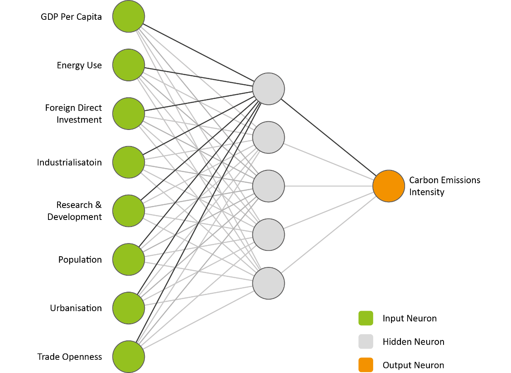
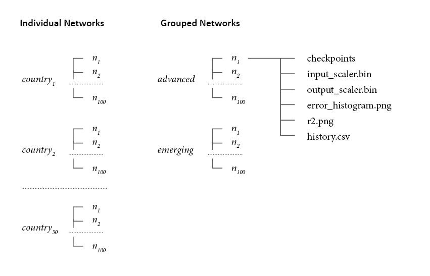
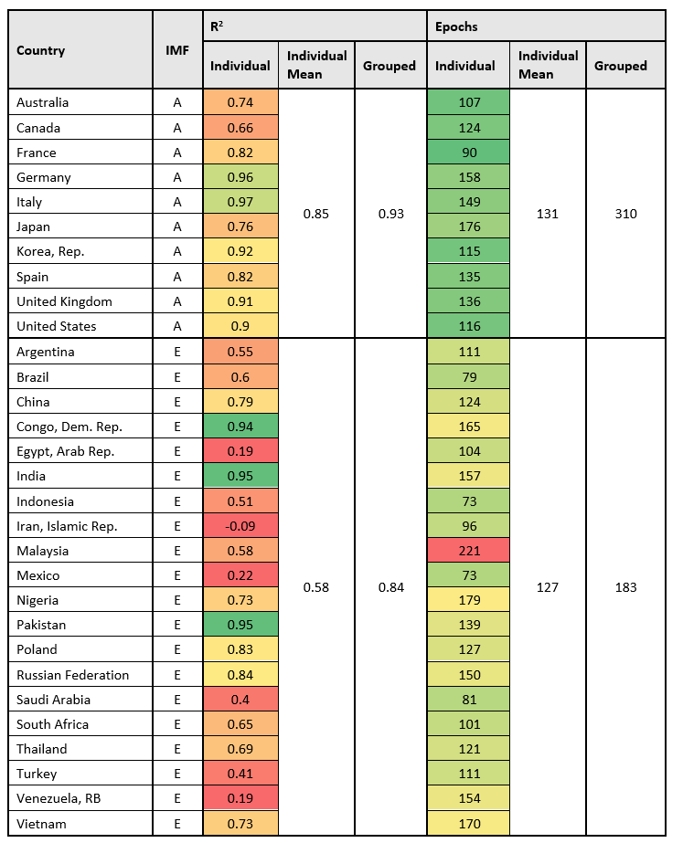
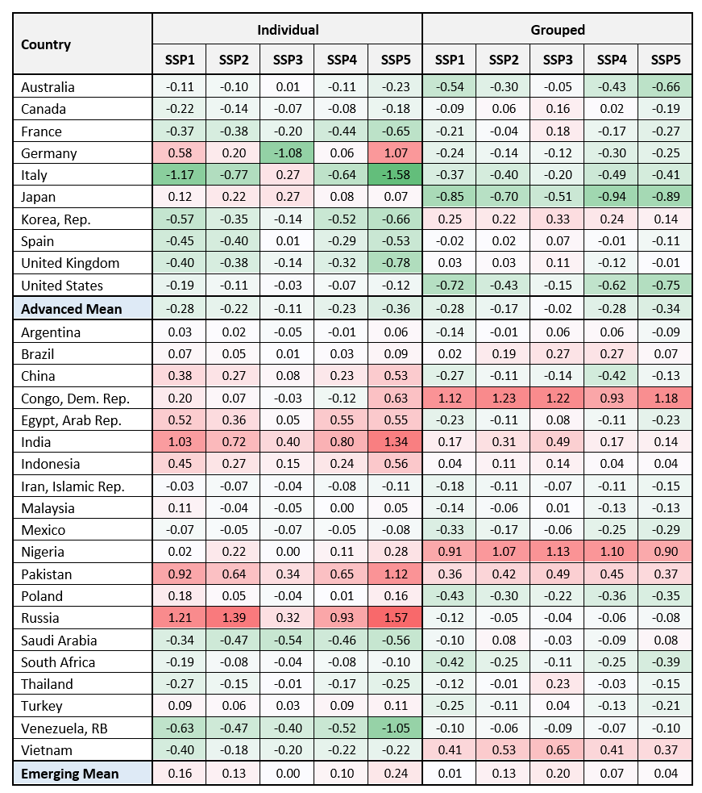
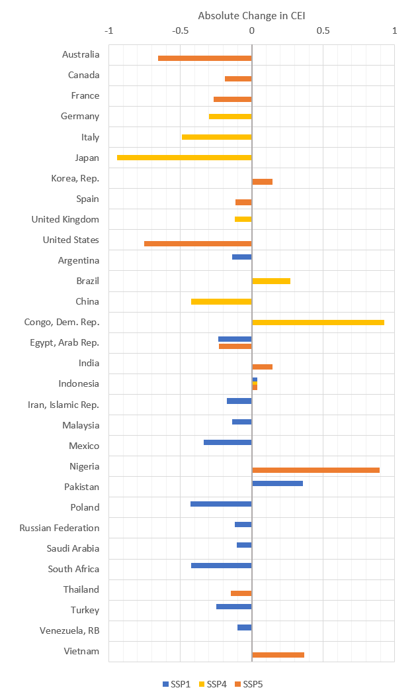

Using Machine Learning to model Carbon Emissions Intensity
Summary
For my dissertation, I chose to model carbon emissions intensity (CEI) of energy use at a national scale,
using artificial neural networks (ANN’s), a form of machine learning. The intent was to evaluate how
effective the ANNs were within this context, and interpret the results of CEI projections.
The full paper is available here, for which I was awarded an outstanding distinction, and a summary of the
key points is provided below.
My Role: Researcher
In order to train the ANNs, a set of developmental indicators were identified and data was collected from 1980-2014.
This was done for the top 30 countries with the largest total greenhouse gas emissions. Different ANN architecture
was trialled until a design was set on based on performance.

Figure 1: The representation of the ANN for individual countries
Two training methods were used, both that used cohorts of ANNs:
One where each cohort was trained using only the data from individual countries, thus creating 30 cohorts
The second utilised only two cohorts, and countries were categorised into two groups based on their development status
 Figure 2: An overview of the code outputs, where n is a single trained network
In order to interpret the models, the Shared Socioeconomic Pathways were interpreted to model the development indicators forward to 2050 and 2100. These projected indicators were then fed into the trained networks, in order to predict CEI for each country under SSP1-5.
 Figure 3: Extrapolated indices for the UK to 2050, overlaid on historic data
Figure 3: Extrapolated indices for the UK to 2050, overlaid on historic data
The individually trained networks had varying accuracy across the countries, with some achieving a high R2 (0.97) and some training poorly (-0.04). In contrast, the two IMF grouped networks both trained well (0.93 and 0.84 for Advanced and emerging respectively), exhibiting improvements in accuracy for the majority of the countries compared to their individual networks.
 Figure 4: The training results for the individual country networks, and the grouped networks for R2 and epochs required. The countries individual scores are colour coded based on their values with respect to the group networks e.g. green indicates the individual networks have a better R2 or required fewer epochs compared to the grouped value
For projections, the individual networks had two countries achieving zero CEI (Italy and the Democratic Republic of the Congo), however they exhibited a high degree of uncertainty. Within the grouped networks, no country reaches a CEI of zero, with France achieving the lowest CEI, closely followed by the Democratic Republic of the Congo, and other European countries. SSP1 generally presents good opportunities across all countries to lower CEI, however a number of countries perform slightly better with SSP4 and SPP5.
 Figure 5: The absolute value change in CEI from 2020 to 2050 for all countries, SSPs and network types. Colour scale used shows magnitude of change
 Figure 6: Absolute change in CEI with the best performing SSP for each country
The number of countries failing to achieve a CEI of zero or lower could be explained by the limited data availability. As the ANNs also rely in historic data with 2014 being the last year used, they would not be able to accurately predict the inclusion of carbon capture and storage (CCS) systems, thus representing CO2 emissions created, but not necessarily emitted to the atmosphere. It therefore highlights the importance of CCS in limiting GHG emissions, with the likely continued reliance on fossil fuels.